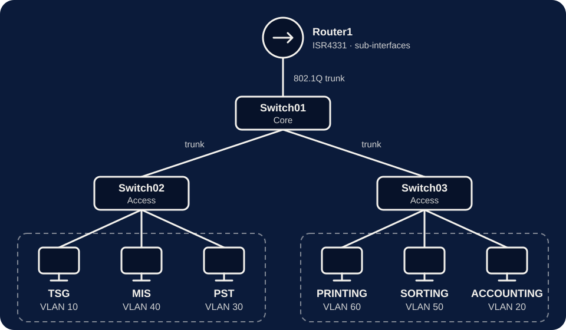
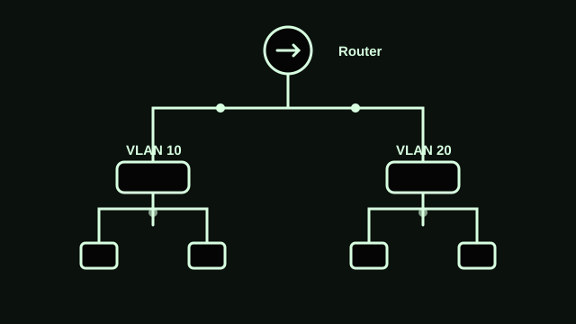
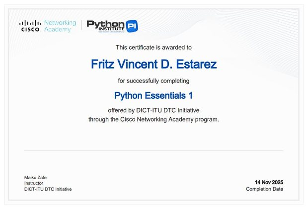
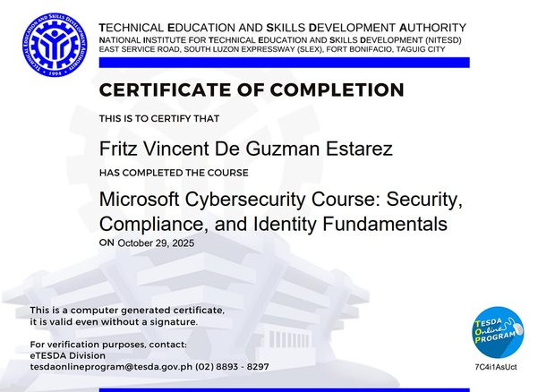
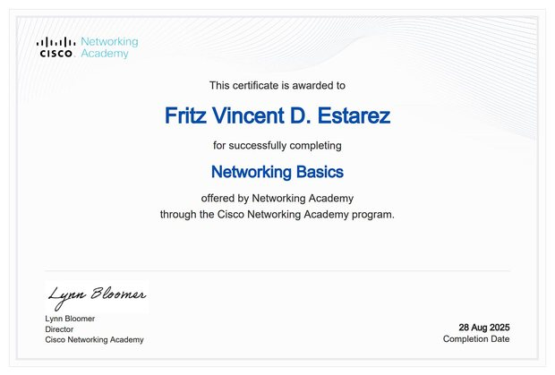

Networks that stay up.
I'm Fritz, a junior network administrator in Makati. I keep routers, switches, servers and user accounts running for a 60-user site, and I build VMware labs to keep learning.
Get in touch
On the jobSince Dec 2025
Network supported60 users, 1 site
Tickets resolvedAbout 20 a month
Tools I work with
- Wireshark
- Claude
- Packet Tracer
- GNS3
- Nmap
- VMware
- Wireshark
- Claude
- Packet Tracer
- GNS3
- Nmap
- VMware
Projects
Hands-on networking labs. Select a project to see its topology, configuration, results and downloads.

Six department VLANs across a core and two access switches, with inter-VLAN routing on a router.
View project

Two switches and two VLANs joined by 802.1Q trunks, with a router connecting the VLANs.
View project
Services
What I can help your team with.
Network setup and support
Configure and maintain routers, switches, VLANs, DHCP, DNS and VPN, with clear documentation.
Windows Server and Active Directory
User accounts, group permissions and Group Policy, using least-privilege access.
Troubleshooting
Connectivity and performance issues solved with Wireshark and Nmap, about 20 tickets a month.
Security basics
Access control, compliance and identity fundamentals, backed by ISC2 CC.
Technical skills
What I use day to day.
About
I'm a junior network administrator in Makati. I'm strongest at day-to-day troubleshooting, access control and keeping users connected, and I'm working toward CCNA, Network+ and A+.
Education
Bachelor of Science in Information Technology
Universidad de Manila, graduated July 2025
Dean's Lister, 2 semesters



- Python Essentials 1, Cisco Networking Academy, Nov 2025
- Microsoft cybersecurity: security, compliance and identity fundamentals, TESDA, Oct 2025
- ISC2 Certified in Cybersecurity (CC), Aug 2025
- Network Defense and Networking Basics, Cisco Networking Academy, Aug 2025
- In progress: Cisco CCNA, CompTIA Network+ and CompTIA A+
View all 7 credentials
Experience
Jr. Network Administrator
Xytron International · Dec 2025 to Present
- Administer a network of 60 users and 60 devices at one site: routers, switches, servers and workstations.
- Configure and maintain VLANs, DHCP, DNS and VPN, and document layouts, IP addressing and device configurations.
- Manage accounts, group permissions and access in Active Directory using least-privilege access.
- Troubleshoot with Wireshark and Nmap, resolving about 20 tickets a month.
Technical Engineer Intern
Micro Pacific Technology & System Corp · Jan 2025 to May 2025
- Troubleshot hardware, software and network issues alongside senior technical staff.
- Kept inventory records and technical documentation, and set up PCs and laptops.
- Presented technical findings and reports to the CTO.
Email is the best way to reach me.
fvestarez22@gmail.com
Tondo, Manila · working in Makati, Philippines